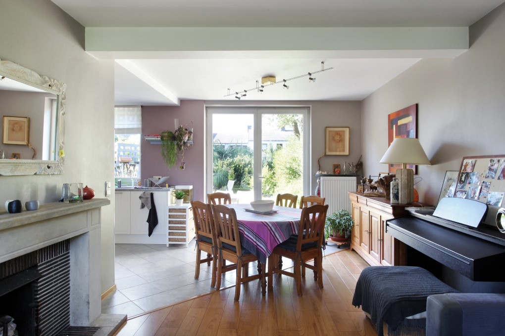
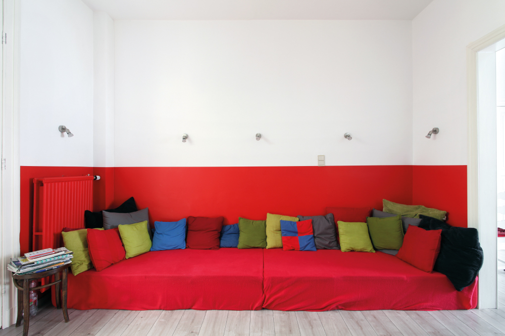
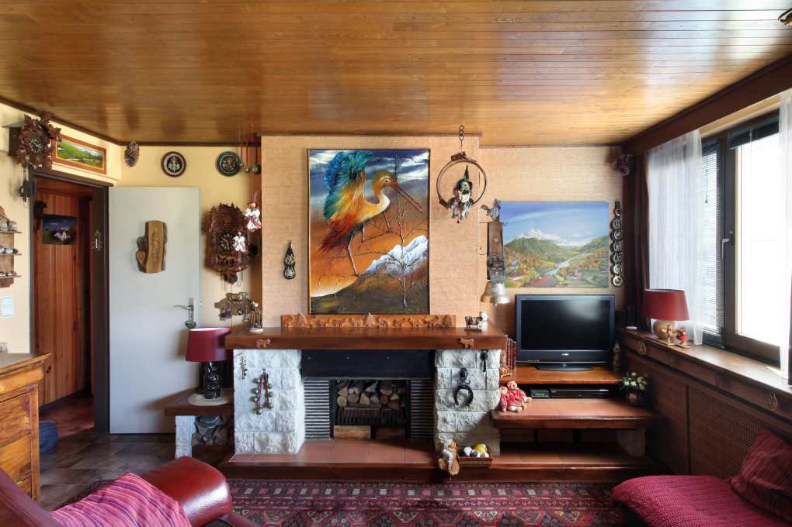
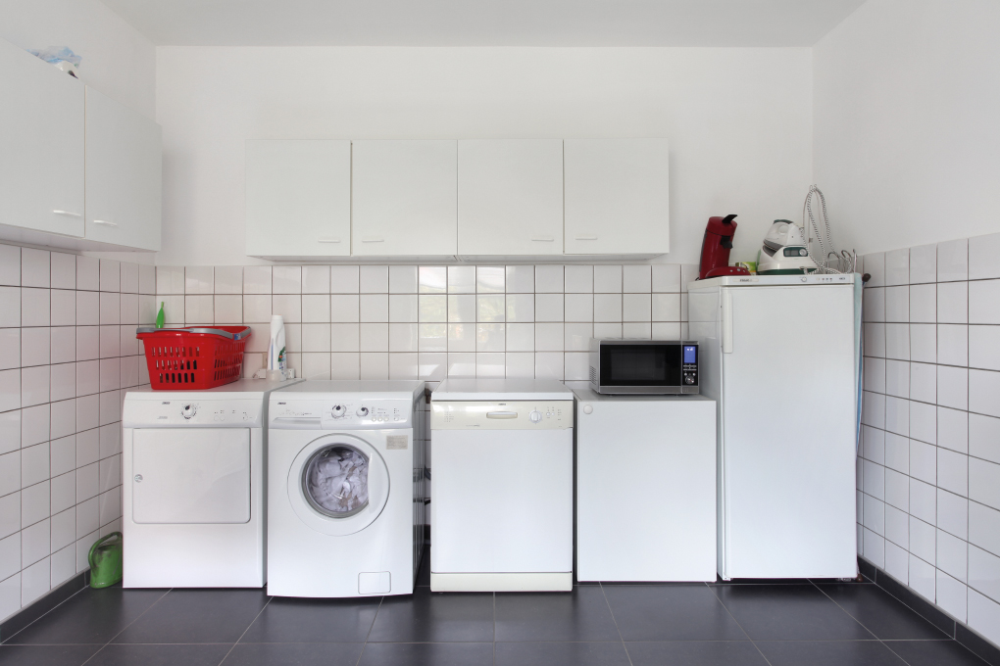
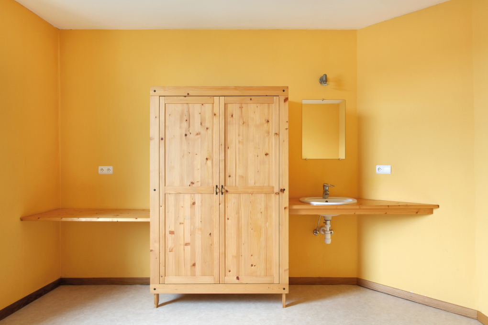
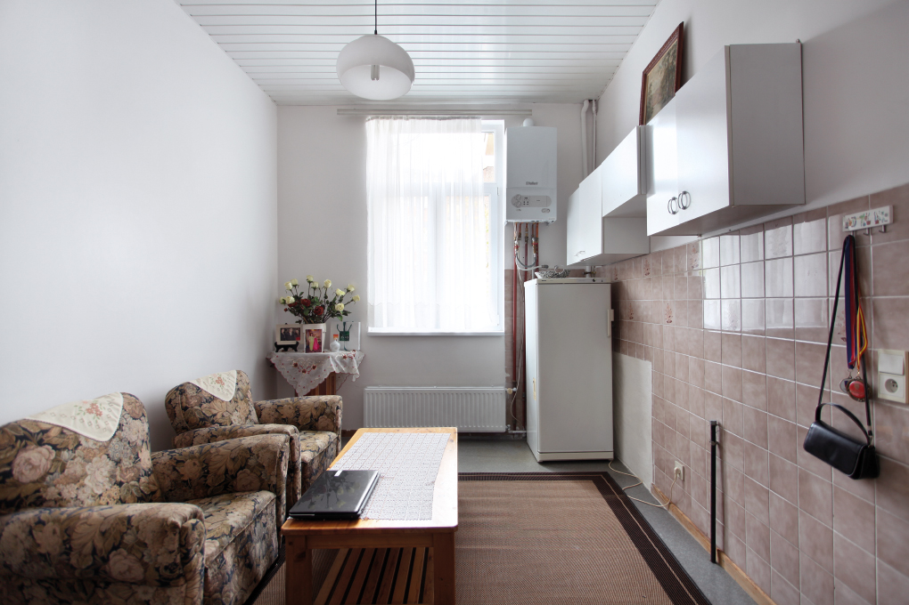

024, maison trois façades, propriétaire, La Hulpe, 1973

049, maison mitoyenne, propriétaire, Namur, 1930

069, appartement, propriétaire, Auderghem / Oudergem, 1965

074, maison quatre façades, propriétaire, Lommel, 1983

158, maison mitoyenne, locataire, Habay, 1971

183, appartement, locataire, Saint-Josse-ten-Noode / Sint-Joost-ten-Node, 1930
